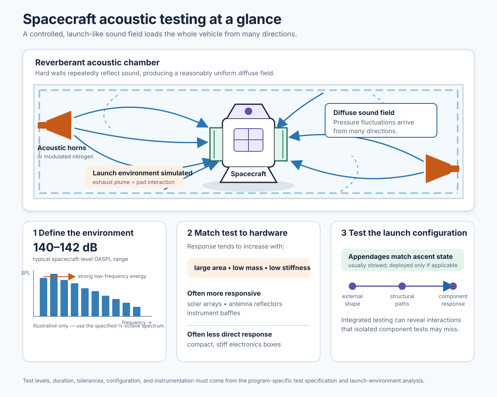

- 1. The Launch Environment: Why It Is So Demanding§1
- 2. The Three Mechanical Environments§2
- 3. Where the Numbers Come From: Defining Vibration, Acoustic, and Shock Test Levels§3
- 4. Qualification vs. Acceptance: The Two Philosophies of Environmental Test§4
- 5. Sine Vibration Testing§5
- 6. Random Vibration Testing§6
- 7. Acoustic Testing§7
- 8. Shock Testing§8
- 9. Test Fixturing and the Boundary Condition Problem§9
- 10. Instrumentation, Data Acquisition, and Monitoring§10
- 11. Notching, Over-Testing, and the Art of the Correct Input§11
- 12. Post-Test Assessment and Anomaly Response§12
- Key Terms GlossaryGL
A rocket launch is, by any measure, a violent event. In the first minutes after ignition, a spacecraft is exposed to powerful vibration as engines fire and the launch vehicle flexes and responds to changing forces. It is battered by intense sound from the exhaust plume and its interaction with the launch pad, and it experiences sudden, sharp shocks when pyrotechnic devices release the fairing, separate stages, or perform other critical functions. The spacecraft must endure these conditions not merely without visible damage, but without losing any of the capabilities it will need in orbit. Instruments that depend on precise alignment must remain accurately positioned; electrical connections and structural attachments must stay secure; antennas, solar arrays, and other deployable mechanisms must still function when commanded; and its electronics must continue to operate reliably. Surviving launch, in other words, means arriving in space ready to begin the mission—not simply arriving intact.
The purpose of mechanical environmental testing is to show, on the ground and before launch, that a spacecraft and its components can withstand the forces of launch and still perform their intended functions afterward. It is often the most physically dramatic part of the integration and test program: hydraulic shakers powerful enough to move a car, acoustic chambers capable of producing sound levels that would quickly damage unprotected hearing, and pyrotechnic shock events that deliver their damage not through noise but through sheer rapidity — a transient closer to a hammer striking a brick wall than to a loud sound, over and done in a few milliseconds. It is also one of the most demanding phases of spacecraft testing, and for a specific reason: the speed at which damage can occur. A thermal-vacuum test is comparatively slow, giving the team time to notice a developing problem and react; an EMC test tends to reveal changes in behavior or signal quality rather than physical damage at all. A shock or vibration anomaly, by contrast, can damage hardware before anyone watching has time to respond — a malfunctioning shaker, an over-driven acoustic horn, or bad instrumentation calibration can turn a routine test into a destructive one in a fraction of a second, which is exactly why the instrumentation, abort logic, and disciplined anomaly response covered later in this article carry so much weight.
But not all the damage this testing can cause is fast or dramatic. Vibration and acoustic loading can also produce slower, smaller-scale problems: a connector that loosens rather than fails outright, a cable mount that shifts, thermal insulation that works free, a mounting support that takes on a hairline crack, a propulsion line fitting that backs off slightly. These are real failure modes, but they often don't show up in the instrumentation at all — not because the sensors failed, but because the damage starts too small to register, or because no sensor happens to be at that exact location. Accelerometers, useful as they are, can't be placed everywhere. This is precisely why physical inspection before and after a test, and functional testing bracketing it, are not optional extras: they catch what instrumentation alone will miss. Physical inspection can find a loosened connector or a shifted mount that no accelerometer would ever flag; a functional test can reveal that a temperature sensor has gone dead or a signal has become noisy, even when nothing was visibly wrong and no instrumented channel exceeded a limit. That functional test doesn't need to be a full comprehensive performance characterization — it needs to exercise enough of the spacecraft's electrical paths and functions to give reasonable confidence that nothing has been disconnected, damaged, or electrically changed by the test.
There is a further reason these checks matter, beyond catching what instrumentation misses spatially: a test can produce a completely clean instrumented "pass" — every channel within limits, no anomalies flagged — and hardware can still fail or be damaged, because something inside it was inadequately designed, analyzed, built, or tested for the levels actually seen during the campaign. A connector or fastener that comes loose inside a component is a good example: spacecraft-level accelerometer data has essentially no chance of revealing that, since the sensors are on the outside of the box, not inside it. Only a properly designed functional test — one that actually exercises the electrical path that connector or fastener sits on — has a chance of catching it. A test that wasn't designed with this kind of internal, hard-to-instrument failure in mind can pass right alongside a genuine problem.
"The launch environment does not change depending on the schedule or the budget. When the vehicle lifts off, every part of the spacecraft is exposed to the combined effects of vibration, sound, acceleration, and shock. These forces arrive whether the hardware is ready or not. Environmental testing is the closest we can come, before launch, to answering the essential question: is the spacecraft ready?"
Vibration, acoustic, and shock testing is not a "run it and check the results" activity from the I&T lead's chair the way some mechanical testing is. The spacecraft is typically powered and telemetry-monitored throughout much of the campaign, functional tests bracket every test event, and the test article physically moves — on and off the test table — multiple times over the course of a multi-day campaign. Each of those reconfigurations means cables disconnected and reconnected, connectors demated and remated, sensor and harness continuity re-verified, and a functional test re-run before the next axis proceeds. None of that happens by itself, and all of it is on the I&T lead's plate to plan, staff, and choreograph.
This means the I&T lead needs more working knowledge here than the term "mechanical test" might suggest: enough to build a realistic schedule for a test that includes transportation activities, reconfiguration windows and not just shaker time; enough to know what "reconnect and verify" actually requires at each axis change so it isn't treated as a five-minute step wedged between test runs; enough to recognize, while watching telemetry live during a run, when a limit violation or an unexpected signature warrants an abort call rather than waiting for the post-test review; and enough to know what the pre- and post-test functional baselines need to cover so a real anomaly isn't lost in reconfiguration noise, or reconfiguration noise isn't mistaken for a real anomaly.
That same working knowledge extends to designing what those functional tests actually exercise, not just scheduling when they run. A test can come back with a completely clean instrumented "pass" — no channel over limit, nothing flagged — while a component has an internal connector or fastener that worked loose, invisible to spacecraft-level accelerometer data because the sensors sit outside the box, not inside it. Only a functional test deliberately designed to exercise that electrical path has a real chance of catching it, which is why the I&T lead needs enough understanding of the hardware and its failure modes to help shape a test that actually covers them.
What none of this means is that the I&T lead is setting test levels, defining the PSD or SRS specification, deciding how much notching is justified, or evaluating whether a resonance shift is a structural problem — that is the structural dynamics engineer's work, and rightly so. The I&T lead's expertise is in the orchestration and coverage around the test: making sure the right hardware, people, configuration, and functional checks are in the right place at the right time so the dynamicist's carefully specified test can actually be executed as planned, axis after axis, without schedule slip, configuration error, or a blind spot in what gets verified.
One responsibility belongs to the I&T lead alone, and it is the hardest one to hold to under pressure: when a test produces an anomaly, an unusual reading, or anything that simply doesn't look right — no matter how minor it seems — the test configuration must not be disturbed until the issue is fully understood. Flight hardware, test sensors, cabling, fixturing: none of it moves, none of it gets "fixed" or reconnected or reconfigured, until the anomaly is investigated and resolved. This is a crime scene, not a workstation — disturbing it can hide, obscure, or permanently eliminate the evidence needed to understand what actually happened. Schedule pressure and the hourly cost of a shaker or an acoustic chamber will push hard in the other direction, and upper management retains the authority to overrule a hold. But that authority is theirs to exercise, not the I&T lead's to pre-empt — the I&T lead's job is to call the hold, hold the line on it, and make the case for why it matters, every time, regardless of what it costs in schedule or facility fees.
1. The Launch Environment: Why It Is So Demanding
To understand why mechanical environmental testing is so demanding, it helps to understand where the energy comes from during a launch.

Each of these events produces mechanical energy with different characteristics — different frequency content, different duration, different spatial distribution across the spacecraft structure. A spacecraft that survives Max-Q acoustic loading may fail during stage separation shock. A component that survives sinusoidal vibration may fail under broadband random vibration because different frequency ranges excite different structural resonances. The complete mechanical environmental test program must address all of these regimes.
An important additional consideration is the interaction between these environments. The launch vehicle does not apply them sequentially with recovery time in between — they overlap, combine, and build on each other in ways that ground tests can only approximate individually. This is one of the fundamental limitations of ground environmental testing: we can apply each environment separately, and we can do so at levels that bound the expected flight environment with margin, but we cannot perfectly replicate the combined simultaneous loading of an actual launch. Structural analysis and similarity with previously flown hardware must bridge the remaining gap.
2. The Three Mechanical Environments
Vibration is the back-and-forth mechanical motion transmitted through the spacecraft structure during launch. It is driven by the engines, by the way the launch vehicle flexes and responds to those forces, and by aerodynamic buffeting as the vehicle travels through the atmosphere. Engineers describe vibration in terms of its frequency, amplitude, and duration.
Two forms are commonly tested. Sine vibration applies motion at one frequency at a time while sweeping through a defined range. Random vibration applies energy across many frequencies at once, more closely representing the complex vibration environment produced during flight. Each reveals different weaknesses in hardware, from loosening fasteners and stressed structural joints to failures in electronic assemblies and wiring harnesses.
Acoustic loading is caused by the intense sound field produced by rocket exhaust and shaped by its interaction with the launch pad, surrounding structures, and the interior of the payload fairing. At liftoff, sound levels inside the fairing can reach roughly 140–145 dB overall — comparable to being near a jet engine at full thrust.
Unlike vibration transmitted through a spacecraft's mounting points, acoustic energy acts through rapid fluctuations in air pressure. These fluctuations can excite the spacecraft structure and its lightweight panels, including solar arrays, antenna reflectors, and instrument covers. Large, lightweight structures that may be relatively resistant to vibration entering through their attachment points can nevertheless be especially vulnerable to acoustic loading.
Mechanical shock is a sudden, high-intensity burst of motion caused by pyrotechnic devices — small explosive or gas-driven mechanisms used to release hardware at critical points in flight. These devices may separate launch-vehicle stages, jettison the payload fairing, or release the spacecraft from the launch vehicle.
A typical pyrotechnic shock event lasts only a few milliseconds, but it can produce peak accelerations of thousands of g and excite frequencies up to 10,000 Hz. These short, sharp events can be especially demanding for delicate or rigid components, including crystal oscillators, relays, ceramic capacitors, optical mounts, and hardware with resonant frequencies in the affected range. Because the shock travels through complex spacecraft structures and can vary significantly from one location to another, it is among the most difficult launch environments to test and analyze.

3. Where the Numbers Come From: Defining Vibration, Acoustic, and Shock Test Levels
Every test level described in this article — a PSD in g²/Hz, an OASPL in dB, a Shock Response Spectrum — has to come from somewhere before it can be written into a test specification. None of these values are chosen arbitrarily, and none of them are simply read off a single prior flight. Understanding how they're actually derived helps explain both the amount of engineering rigor behind a seemingly simple number, and why "the flight environment" is more of a defensible statistical statement than a single measured fact.
Flight Measurement Is the Foundation
Launch vehicles carry their own instrumentation on every flight — accelerometers, microphones, and strain gauges mounted on the vehicle structure and, where available, on the payload adapter or payload itself. Over many flights of the same vehicle family, the launch provider accumulates a real population of measured data: how much vibration, sound, and shock actually occurred, at specific locations, across a range of real missions with their own variation in thrust, atmospheric conditions, trajectory, and manufacturing tolerances.
From Measured Data to a Test Specification: Enveloping and Margin
A test specification isn't built from a typical flight or an average of the fleet — it's built from a statistical envelope of that flight history. At each frequency, the specification generally reflects something close to the highest levels reasonably expected across the population of flights, often expressed as a formal statistical tolerance bound (for example, a level with 95% confidence that 95% of future flights will remain at or below it — the specific formulation varies by launch provider and program). This enveloped, flight-derived prediction is commonly called the Maximum Expected Flight Level (MEFL).
MEFL is already a bound, not a nominal value — but qualification and acceptance levels then add further margin on top of it, as discussed in the next section. Qualification levels are commonly 3–6 dB above acceptance levels for exactly this reason: acceptance levels are meant to represent the expected flight environment with a controlled margin, while qualification levels are meant to demonstrate that the design has additional capability beyond that.
New Vehicles and Sparse Data: Analysis Fills the Gap
A brand-new launch vehicle, or a new configuration of an existing one, doesn't yet have a flight history to envelope. In these cases, or wherever flight data at a particular frequency band or location is thin, the environment is predicted analytically instead — coupled loads analysis, acoustic radiation modeling of the engine plume, and statistical energy analysis (SEA) for high-frequency vibroacoustic transmission are all commonly used. As real flights accumulate, the launch provider typically revises and tightens the specification to reflect what actually occurred.
Generic vs. Mission-Specific: The Role of Coupled Loads Analysis
What a spacecraft program initially receives from the launch vehicle provider — typically documented in a Payload User's Guide — is a generic environment enveloping that vehicle's entire payload class, not a prediction tailored to any particular spacecraft's own mass, stiffness, or mounting configuration. A stiff, compact spacecraft and a large, flexible one bolted to the same launch vehicle adapter will not actually experience identical vibration and shock environments in flight, even though the generic specification treats them the same until something more specific is done.
Getting a genuinely mission-specific vibration and shock environment — one that accounts for how a particular spacecraft's own structural dynamics interact with the launch vehicle's — normally requires a Coupled Loads Analysis (CLA), performed jointly by the spacecraft program and the launch vehicle provider using both parties' structural models, typically once the spacecraft design has matured enough to support it. Acoustic levels are generally less sensitive to this spacecraft-specific coupling than vibration and shock are — the sound field inside the fairing is driven primarily by the vehicle and fairing geometry rather than by the payload's own structural dynamics — so acoustic specifications tend to stay closer to the generic, vehicle-class-level values throughout a program.
None of this derivation work is the I&T lead's to perform — MEFL development, coupled loads analysis, and SEA modeling belong to the launch vehicle provider's and the program's structural/loads analysts. But the I&T lead does need to know that a test specification has a pedigree: which document it came from, whether it reflects a generic payload-class envelope or a mission-specific CLA result, and whether it has been updated since the spacecraft's design matured. A test conducted against a stale or overly generic specification, run because "that's the number in the original test plan," can end up testing to the wrong environment entirely — either an unnecessarily severe one that risks over-testing flight hardware, or an insufficiently severe one that leaves real flight risk unverified. Knowing where the number came from, and confirming it is still current, is squarely part of preparing for the test.
4. Qualification vs. Acceptance: The Two Philosophies of Environmental Test
Mechanical environmental testing generally serves one of two purposes: qualification or acceptance. These are not simply different test levels. Qualification establishes that a design has sufficient margin to survive its intended launch environment, while acceptance verifies that each flight article was built correctly and can withstand its expected test exposure.
The distinction affects the test levels and durations, the hardware selected, the amount of life consumed, and—most importantly—the conclusions the program can draw from the results.
| Parameter | Qualification Test | Acceptance Test | Rationale |
|---|---|---|---|
| Purpose | Demonstrate that the design has adequate margin over the flight environment | Screens each flight article for workmanship defects and major nonconformances | Qualification assesses the design; acceptance assesses the individual unit |
| Hardware used | A dedicated qualification article, structural model, or engineering model; normally not flown | Each flight unit, meaning the hardware intended for launch | Qualification testing can be more severe; acceptance testing must preserve flight hardware life |
| Input levels | Usually above MEFL-derived acceptance levels, with increased duration or both | Based on the Maximum Expected Flight Level (MEFL), with a controlled margin appropriate to the program | Qualification must establish design margin without creating an unrealistic test environment |
| Duration | Usually longer than acceptance testing; for random vibration, a common approach is 3 minutes per axis | Typically the minimum needed to screen workmanship; often about 1 minute per axis for random vibration | Longer exposure increases the chance of revealing fatigue-related weaknesses, but also consumes life |
| Axes tested | All three orthogonal axes | All three orthogonal axes | Launch loads act in three dimensions, even when laboratory vibration is applied one axis at a time |
| Pass criterion | No structural failure or unacceptable degradation; functional testing verifies continued operation afterward | No damage or unacceptable degradation; functional testing confirms the flight article remains within specification | Both tests require functional verification, but qualification may also require additional inspection and analysis |
| Life consumption | The qualification article may consume substantial fatigue life and is commonly retired after test | Exposure must be limited while still providing an effective workmanship screen | Excessive testing can reduce the remaining reliability margin of flight hardware |
The practical consequence is that a flight article should not be exposed to full qualification testing by default. If a program has only one spacecraft and no dedicated qualification unit, it must make an explicit decision about how to establish confidence in the design. It may rely on qualification by similarity to proven hardware, use a carefully tailored protoflight approach, or accept a higher degree of residual risk with acceptance-level testing alone.
Each option involves a trade-off among cost, schedule, available hardware, and technical confidence. That trade-off should be documented, reviewed, and formally accepted by the program’s technical authority rather than treated as an implicit assumption.
On many spacecraft programs — particularly smaller missions where building a dedicated qualification unit is not affordable — a protoflight approach is used. A protoflight test applies qualification-level input amplitudes but acceptance-duration test times. This approach provides more design margin verification than pure acceptance testing, while consuming less fatigue life than full qualification testing on the flight hardware.
The protoflight approach is a formal risk acceptance, not a free lunch. It provides less confidence in design margins than full qualification testing, and any unexpected anomaly during protoflight testing may affect the only flight article available. Programs that choose protoflight testing do so with full awareness of these trade-offs, documented in the program's risk register and approved by the technical authority.
Detectors, optics, filters, lenses, and other alignment-critical instrument hardware can be highly sensitive to any of the three environments covered in this article. Fragile die attach, wire bonds, and cold-stage mounting on a detector can be excited by sine or random vibration as easily as by a shock transient. Large, lightweight optics and baffles are exactly the kind of structure most susceptible to acoustic loading. And instrument-level alignment budgets are often far tighter than anything at the bus level, so a displacement that would be irrelevant elsewhere can put an entire instrument out of spec, regardless of which environment caused it.
This hardware is frequently GFE or PI-furnished, built by an organization that may not have deep environmental-test experience — and it often arrives late in integration carrying its own qualification history, which the I&T team needs to actually scrutinize rather than assume covers the installed environment.
In practice, environmental testing of mission-unique hardware is usually conducted only at the fully assembled spacecraft level — the providing organization frequently lacks the facilities or resources for standalone vibration, acoustic, or shock testing of its own. That makes the spacecraft-level test the first and often only real verification this hardware receives. Where there is sufficient concern — fragile optics, a tight alignment budget, thin margin between predicted and qualified levels, or simply unproven heritage — a standalone component- or subassembly-level test in the relevant environment should be considered and planned for early, since it cannot be added late without schedule and budget impact.
5. Sine Vibration Testing
Sine vibration testing applies controlled back-and-forth motion at a single frequency to the base of a test article. The test system slowly sweeps that frequency from low to high—sometimes reversing direction as well—while instruments measure how the structure responds. Because the input is concentrated at one frequency at a time, sine testing is highly repeatable and helps engineers identify the source of unusual structural behavior.
Unlike acoustics and shock, where the connection to a physical launch event is fairly intuitive — loud engines, an explosive separation — it's less obvious why vibration testing splits into these two specific methods rather than some other approach. The answer is that sine and random vibration each represent a genuinely different category of real flight load, not an arbitrary or convenient division.
Some launch loads really are close to sinusoidal: POGO oscillation, thrust oscillation from combustion instability, and other narrowband, quasi-periodic loads produced by the engines and structural feedback behave much more like a sustained single-frequency input than like broadband noise. Sine testing represents that class of load reasonably faithfully. Most of the rest of the ascent environment, however, is genuinely stochastic rather than repeatable — combustion turbulence, aerodynamic boundary-layer noise, and many structural modes responding at once don't have a single waveform to point to, and are better described statistically, using a Power Spectral Density (PSD) — a plot of how vibration energy is distributed across frequency, covered in detail in §6 — rather than a single trace. A sine sweep, driving one frequency at a time, structurally cannot represent that kind of simultaneous, multi-frequency excitation. Sine earns its place for a second reason as well, distinct from how flight-representative it is — one that "What Sine Vibration Reveals," below, covers in full.
Sine and random aren't the ceiling of what's technically possible, either. When engine tones and broadband content both matter for a given hardware item, sine-on-random or random-on-random testing combines both in a single run. Time waveform replication drives the shaker with an actual recorded flight acceleration trace rather than a synthetic input — the vibration-test equivalent of the recorded-launch-audio approach described for acoustic testing in §7. These are used when the standard sine/random split isn't judged sufficient for a specific program or component; for most spacecraft-level testing, the sine/random division remains the practical default because it cleanly separates "narrowband and diagnostic" from "broadband and flight-representative."
What Sine Vibration Reveals
The primary purpose of a sine sweep is to identify resonant frequencies: frequencies at which the test article responds more strongly than the motion applied at its mounting interface. At resonance, even a modest input can produce relatively large motion, increasing stresses and deflections within the structure. Sine vibration testing can reveal:
- Structural resonances: These are the natural frequencies of an assembly and help predict its response to the broader vibration environment of launch. A resonance near a strong excitation frequency from the launch vehicle can require additional analysis or a design change.
- Low-frequency structural performance: Slow changes in thrust, vehicle motion, and aerodynamic loading can create substantial low-frequency loads. Sine testing helps verify that the structure has adequate stiffness and strength under these conditions.
- Agreement with structural models: Measured resonant frequencies and vibration patterns can be compared with predictions from a finite-element model (FEM). Significant differences may indicate that the model does not fully represent the hardware’s actual stiffness, mass distribution, boundary conditions, or joint behavior.
- Potential workmanship or assembly issues: Loose fasteners, weak or improperly bonded joints, and incorrectly assembled mechanisms can appear as unexpected shifts in frequency, unusual damping, or nonlinear response during a sweep.
The Low-Level Survey Sweep
Before a spacecraft is exposed to a full-level vibration test, engineers perform a low-level survey sweep at a small fraction of the planned test input—often around 0.1 g. The purpose is to measure the structure’s normal response and identify its resonant frequencies while keeping the input low enough to avoid damaging the hardware.
A similar low-level sweep is performed after the main test. Engineers then compare the pre-test and post-test results, along with the response measured during the full-level test, to look for evidence of a structural change. A meaningful shift in resonant frequency, a change in damping, or unexpected nonlinear behavior can indicate loosened hardware, a damaged joint, or another test-induced anomaly.
A resonant-frequency shift of more than about 5 percent is often treated as a threshold for investigation, although the appropriate limit depends on the spacecraft, the mode being evaluated, the test configuration, and the governing program requirements.
6. Random Vibration Testing
Random vibration testing applies motion across a broad range of frequencies at the same time, rather than concentrating the input at one frequency as in a sine sweep. The test is defined by a Power Spectral Density (PSD), which describes how the vibration level is distributed across frequency, commonly expressed in units of g²/Hz. The total vibration level is often stated as grms, a single value derived from the combined energy across the PSD frequency range.
As §5 describes, most of the launch vibration environment is genuinely stochastic rather than repeatable, which is why random vibration — not sine — is the better representation of flight for most of the frequency range. The PSD is how that statistical description is actually captured: rather than a single trace, it's a distribution showing how much vibration energy is present at each frequency.
What Random Vibration Reveals
- Workmanship defects in electronics: Random vibration is commonly used to screen electronic assemblies for marginal solder joints, incompletely seated connectors, insufficiently tightened fasteners, and components that lack adequate support. The test may not harm a properly built assembly, but it can expose defects that would otherwise grow or disconnect under flight loading.
- Harness and cable-support problems.: Cables and harnesses that are not adequately supported can resonate at frequencies within the random vibration spectrum and chafe against structure, causing insulation damage. Harness routing and support adequacy is often best evaluated by observation during random vibration testing.
- Mechanism and bearing concerns: Marginal bearing preload, inadequate lubrication, or assembly errors can sometimes produce unusual sounds or response patterns during the test, providing an opportunity for investigation before launch.
- Fatigue-related structural risk: Random-vibration levels and durations are selected to provide the intended fatigue exposure relative to the expected launch environment. The objective is to provide a meaningful test without consuming an unacceptable amount of life from hardware that will ultimately fly.
Engineers new to random-vibration testing often focus on the overall grms value: “This test is 8.5 grms.” That number is useful, but it does not fully describe the test. Two PSD specifications can produce the same overall grms level while distributing their energy very differently across frequency. The same piece of hardware may respond very differently to each one, depending on where its resonant frequencies occur.
What matters is both the shape of the PSD—how vibration energy is distributed across frequency—and the way that input interacts with the test article’s structural behavior. A resonance located in a high-energy part of the PSD can be excited much more severely than one located where the specified energy is low.
For that reason, a test engineer must consider both sides of the problem: the input specification and the hardware’s expected response. Overall grms is a useful summary value, but it is not, by itself, a measure of how severe the test will be for a particular spacecraft or component.
During vibration testing of the U.S. Air Force Academy's FalconSat-2 small satellite, a solder joint on the spacecraft's S-band antenna — located between nested tubes in the antenna shaft — failed in fatigue. The root cause was a resonance problem: the antenna's fundamental bending frequency was too close to the spacecraft's own fundamental frequency, so the antenna's response was amplified at that shared frequency, driving the joint to fatigue failure over the course of the test.
The antenna was redesigned to shift its fundamental bending frequency to roughly 290 Hz — nearly a two-to-one separation from the spacecraft's fundamental — and the redesigned antenna passed its retest with substantially lower response and stress. It's a clean illustration of the point above: a resonance's real danger isn't just whether it exists, but where it falls relative to both the input spectrum's energy and the rest of the structure's own dynamics — and why testing, not analysis alone, is what actually catches a marginal design decision like this one before it becomes a flight failure. (Source: Instar Engineering & Consulting, "Vibration Testing of Small Satellites" technical reference series.)
7. Acoustic Testing
Acoustic testing exposes a spacecraft to an intense, controlled sound field in a specialized facility known as a reverberant acoustic chamber (also called a reverberation room or acoustic test facility). These chambers are large concrete or steel enclosures with hard, reflective interior surfaces. The reflections create a diffuse sound field: sound energy arrives at the test article from many directions, producing a reasonably uniform acoustic environment throughout the chamber.
High-power acoustic horns, or systems that modulate high-pressure nitrogen gas, generate the sound energy required for the test. The goal is to reproduce the severe acoustic environment created during launch by the rocket’s exhaust plume and its interaction with the launch pad and vehicle structure.
The test environment is typically defined by an Overall Sound Pressure Level (OASPL) in decibels, together with a one-third octave spectrum showing how sound energy is distributed across frequency bands. A spacecraft-level acoustic test may reach roughly 140–142 dB OASPL, with substantial energy in the lower-frequency bands associated with launch-vehicle exhaust noise.

Which Hardware Needs It?
Acoustic susceptibility depends largely on an item’s size, mass, stiffness, and exposed surface area. Large, lightweight structures—such as solar-array panels, large antenna reflectors, and instrument baffles—can be particularly responsive to sound-pressure fluctuations. Compact, stiff electronics boxes are often less sensitive to direct acoustic loading and may be more effectively evaluated through random-vibration testing.
The test plan should be based on structural analysis, expected launch environments, the spacecraft configuration, and the way individual items are coupled to the rest of the vehicle. Some components may be tested separately when their acoustic sensitivity, qualification heritage, or test constraints justify it, but acoustic testing is often most informative at the spacecraft level.
System-Level Configuration
When a spacecraft is acoustically tested as a complete vehicle, it should be configured to represent the state it will occupy during the relevant portion of launch. Solar arrays, antennas, covers, and other appendages are therefore usually stowed if they are stowed during ascent; if an item is exposed in a deployed configuration during the applicable environment, that configuration should be evaluated instead.
At the spacecraft level, acoustic loading reflects the interaction between the full sound field and the vehicle’s complete external shape, lightweight structures, and internal load paths. Testing the integrated configuration can therefore reveal responses and interactions that are not apparent when parts are evaluated in isolation.
In 2018, an acoustic test on the James Webb Space Telescope's spacecraft element — conducted at Northrop Grumman as part of its environmental test campaign — was followed by inspections that found fastening hardware, screws and washers, had come loose from the sunshield membrane covers. The fasteners had been assembled with their locking nuts tightened flush with the bolts, specifically to keep them from snagging the delicate sunshield membrane during deployment; that same design choice compromised the locking mechanism, and the loosened hardware worked free under acoustic loading.
The finding forced a further round of inspection and rework and contributed to a schedule slip of several months. It is a real illustration of exactly what this section describes: acoustic testing on large, lightweight structures reveals interactions between design intent and workmanship that neither analysis nor a smaller-scale test would have caught. (Sources: Spaceflight Now and SpaceNews reporting, and NASA program statements from JWST program director Greg Robinson, May 2018.)
Speaker-Based Acoustic Testing — A Practical Alternative
Not every program has ready access to a dedicated reverberant acoustic chamber, and for some test articles — subassemblies, smaller instruments, or programs where cost and facility availability are significant drivers — a full chamber campaign may not be practical or necessary. A commonly used alternative is to temporarily assemble a high-power professional audio system — the same class of equipment used for large concert sound reinforcement — stacked around the test item inside a general-purpose room or lab within the company's own facility, rather than transporting hardware to a dedicated acoustic test facility.
The sound field is driven either by shaped noise generators tuned to reproduce the required OASPL and one-third-octave spectrum, or, in some cases, by an actual recorded time history from a prior real launch of the same or a similar vehicle — which can provide a more authentic reproduction of that specific rocket's acoustic signature than a synthetic spectrum alone.
This approach can be a legitimate and cost-effective test method, but it is not simply "close enough" — the room itself must be engineering-qualified for the purpose, even though it is not a purpose-built chamber. That means verifying the room is structurally adequate to handle the sound pressure levels involved, confirming the space can actually produce a sufficiently diffuse field rather than a few direct paths from the speaker stacks, and instrumenting and controlling the test with the same rigor as a dedicated chamber test. Low-frequency performance is typically the hardest requirement to meet this way: reaching the required SPL at the low frequencies that dominate launch-vehicle exhaust noise generally demands the sheer air volume and horn power of a purpose-built chamber, and a speaker-based setup in a smaller room may fall short there even when it comfortably meets the spec at mid and high frequencies. Any decision to use this approach should include an explicit assessment of whether the facility can meet the full required spectrum, not just the OASPL number.
Planning a test like this is a joint responsibility between I&T and the mechanical lead, not something either can hand off to the other. A dedicated reverberant chamber is a facility built and staffed for exactly this purpose — configuration, control, and safety are largely built into how the facility already operates, and running a test there is close to "roll the hardware down the hall" by comparison. A speaker-based setup in a general-purpose room has none of that built in: the room's structural qualification, speaker placement and rigging, sound-field verification, instrumentation, and safety controls all have to be worked out and set up from scratch for that specific test. The mechanical lead owns the technical adequacy of this alternative setup — whether the room and configuration can actually deliver the required environment — while I&T owns coordinating the logistics, schedule, and configuration control around it. Neither can be assumed to have it covered without the other.
8. Shock Testing
Mechanical shock testing is often one of the most challenging parts of a spacecraft mechanical-environment test program. Real launch shocks are commonly created when pyrotechnic devices operate: explosive bolts, separation nuts, linear cutting charges, and pin-pullers release or separate hardware at critical points during flight. Each event produces a short, intense burst of motion that travels through the spacecraft structure as a stress wave.
Unlike sustained vibration, a shock event may last only milliseconds, yet still contain substantial energy at high frequencies. The severity experienced by a component can vary greatly with its location on the spacecraft, the local structure, and the frequency at which the component itself tends to vibrate.
Understanding the Shock Response Spectrum (SRS)
The shock environment is commonly described with a Shock Response Spectrum (SRS). Rather than reproducing every detail of a measured shock waveform, the SRS shows how a family of simple idealized structures would respond to that event at different natural frequencies.
This gives engineers a practical means of comparing shocks with very different shapes and durations. For example, a longer, lower-amplitude event and a very short, high-amplitude event can produce similar peak responses in some components. The SRS therefore helps define test specifications that represent the relevant shock severity of the flight environment.
A 1985 survey by C. J. Moening found approximately 83 shock-related flight failures across roughly 600 launches through 1984 — more than half of them resulting in catastrophic mission loss. A 1996 NASA Langley report breaks the 83 cases down further: 29 involved broken wires, leads, or cracked glass; 28 involved dislodged contaminants; 22 involved other shock-related effects; and 4 involved relay chatter or transfer problems. (The figure is sometimes attributed to an Air Force Research Laboratory survey, likely because a 2000 Institute for Defense Analyses report coauthored by an AFRL researcher also cites it — but Moening's original survey, not AFRL, is the primary source.)
Methods of Shock Testing
| Method | How It Works | Typical Use | Main Limitation |
|---|---|---|---|
| Pyrotechnic Shock Test | Actual pyrotechnic devices (or representative devices) fired at or near the test article to create a flight-like shock event | Qualification of separation interfaces; testing hardware that will be in close proximity to pyrotechnic devices in flight | Requires stringent safety controls; test levels are difficult to fine-tune; the same test article generally cannot be exposed repeatedly |
| Mechanical Impact Test | A tuned impact device, such as a resonant beam, drop table, or pendulum, strikes a fixture to create the required shock response | Component- and subsystem-level testing where a controllable, repeatable test is needed | It can be difficult to reproduce the highest-frequency content of a true pyroshock event; fixture behavior strongly affects the result |
| Electrodynamic Shaker Shock | A standard vibration shaker driven by a specially shaped transient waveform to produce a defined SRS | Low-level shock testing; hardware that is too sensitive for mechanical impact testing | Limited in attainable shock level and high-frequency content; shaker stroke and force limits can constrain the test |
Shock-Sensitive Hardware
Not all spacecraft hardware responds to shock in the same way. Sensitivity depends on a component’s construction, mounting, damping, and resonant frequencies, as well as the local SRS at its installed location. High-frequency pyroshock can be particularly demanding for components whose natural frequencies fall in a strongly excited part of the spectrum. Components known to be shock-sensitive include:
- Crystal oscillators and quartz resonators High-frequency shock can crack the crystal or shift its operating frequency.
- Ceramic capacitors Their brittle construction can make them vulnerable to cracking when a circuit board bends rapidly during a shock event.
- Optical mounts and alignment-critical assemblies Very small relative motions can shift alignment enough to affect instrument performance.
- Relays and switches Shock can momentarily disturb mechanical contacts, which is important for safety-critical or launch-critical electrical paths.
- Hard disk drives and magnetic storage This is uncommon on modern spacecraft, which generally use solid-state storage, but older systems can be susceptible to head-to-disk contact during shock.
- Propellant valves These must be assessed to ensure launch shock does not cause unintended movement, leakage, or valve actuation.
The generic shock-sensitive hardware above is only part of the picture — see the earlier note on mission-unique hardware for the broader concern across all three environments. For shock specifically: detectors (CCDs, CMOS focal planes, photomultipliers, cryogenic bolometers) can have die attach or wire bonds that crack under a high-frequency pyroshock transient; filters, lenses, and windows are frequently thin and brittle, bonded into their mounts with adhesives that carry their own shock limits; and mirrors and gratings — especially lightweighted or diamond-turned optics — can suffer coating damage or figure distortion under shock loads a structural part would shrug off.

Separation Testing
Beyond generating a shock environment to qualify hardware, a separate and specific test is usually performed on the spacecraft's actual release mechanism itself: the pyrotechnic separation ring, Marman clampband, spring-loaded pusher or deployer system, or other device that will physically release the spacecraft from the launch vehicle at the appropriate point in ascent. This separation test fires the flight or a fully representative unit of that mechanism to confirm the release event performs as intended — not only the shock transient it produces, but the mechanical release itself: that the spacecraft separates cleanly with no hang-up, snagging, or incomplete release, and that the resulting tip-off rates (the angular rates imparted to the spacecraft at separation) fall within the values assumed by the mission's attitude control and early-orbit operations planning.
A separation test is typically performed with the spacecraft suspended or supported in a way that allows it to actually move upon release — often on a low-friction air-bearing table, suspended from counterweighted cords, or otherwise mechanically decoupled from gravity's effect on the test — since the point is to observe and measure the real separation dynamics, not just apply a shock input to a fixed article. High-speed video and accelerometer or rate-gyro instrumentation are standard, since the event happens in a fraction of a second and both the shock transient and the resulting spacecraft motion need to be captured and reconstructed afterward.
This test carries its own configuration-control and safety considerations distinct from the shock-input tests described above: it typically involves live or representative pyrotechnics or preloaded springs, may only be performable once on true flight hardware (destructive or single-use release devices cannot simply be reset and fired again), and the mechanical/GNC engineering teams responsible for the separation system and attitude dynamics are as central to planning and executing it as the I&T lead.
9. Test Fixturing and the Boundary Condition Problem
Mechanical environmental testing depends on the fixture: the structure that connects the test article to the vibration-shaker table or another test-support interface. A fixture is not mechanically neutral. Its mass, stiffness, damping, and natural frequencies influence the motion transmitted to the test article, and an inadequately designed fixture can introduce unintended resonances or distort the test environment.
The goal is not simply to hold the hardware securely. The fixture must transmit the specified input without becoming the dominant source of the response being measured.
Common Fixture Types
A stiff, lightweight structure that distributes shaker motion across a larger attachment interface. It is used when a test article has multiple mounting points that must be driven together at approximately the same prescribed level.
The fixture should be sufficiently stiff that its significant resonances lie outside the relevant test range or are otherwise understood and controlled. A flexible head expander can produce different motion at different mounting points, making it difficult to determine what the test article actually experienced.
An axis-change fixture reorients the test article so it can be tested in an axis perpendicular to the shaker's primary direction of motion. These fixtures must balance low mass with high stiffness.
Extra fixture mass reduces the force and acceleration capability available at the test interface. At the same time, insufficient stiffness can bring fixture resonances into the test frequency range and alter the input seen by the hardware.
An interface-simulation fixture is designed to represent important aspects of the flight mounting structure, including stiffness, mass distribution, and attachment geometry. It is most useful when the test article's behavior depends strongly on the structure to which it will be attached in flight — for example, an instrument tested independently before integration with its spacecraft bus.
This approach does not make the ground boundary condition identical to flight. It aims to make the aspects that most affect structural response sufficiently representative for the purpose of the test.
For a free-free modal survey, the test article is suspended on soft elastic supports, such as cords or bungees, so that the supports have very little influence within the frequency range of interest. This approximates a structure with no rigid attachment boundary and allows engineers to measure its natural frequencies and vibration patterns for comparison with a finite-element model.
Free-free suspension is used for modal characterization and model correlation, not for qualification or acceptance environmental testing.
The boundary condition problem is a fundamental limitation of ground testing: a structure’s response depends on the mass, stiffness, damping, and attachment geometry of the structure supporting it. In flight, a spacecraft is coupled to a launch-vehicle adapter and, through it, to the launch vehicle. On the test floor, it is coupled to a fixture and shaker system that can only approximate that condition.
The test engineer must therefore understand the differences between the flight and test configurations. Fixture modes, excessive flexibility, uneven motion across mounting points, or unrealistic interface stiffness can produce results that do not represent the intended flight environment. Careful fixture design, analysis, instrumentation, and pre-test survey measurements help ensure the test remains representative and interpretable.
Fixture design, stiffness analysis, and mode prediction are the structural engineer's work — the I&T lead isn't expected to evaluate whether a fixture's resonances fall outside the test band. But fixtures don't design, build, or show up on their own, and several things about them land squarely on the I&T lead's plate:
Fixture readiness is a schedule item, not a given. A fixture — especially a purpose-built axis-change fixture or interface simulation fixture — often has its own fabrication and qualification lead time that has to be planned into the test schedule well before the test date, not discovered as a surprise when the test article shows up ready to go and the fixture isn't.
Configuration control extends to the fixture itself. Which fixture, which revision, and which mounting hardware were actually used for a given test run needs to be recorded as part of the test record, the same as any other test configuration detail — because if a resonant-frequency shift or an anomalous response shows up later, "which fixture was on the shaker that day" is one of the first questions the investigation will ask, and it needs an answer.
The low-level survey sweep is the tripwire, and the I&T lead needs to recognize what it's telling them. When a pre-test survey reveals a fixture resonance falling inside the test frequency range, or the structural engineer flags that fixture behavior isn't matching predictions, that's not a minor technical detail to work around quietly — it's a potential schedule and test-validity issue that needs to be raised and resolved before proceeding, not discovered after the fact when post-test data doesn't make sense.
In short: the I&T lead's job isn't to judge whether the fixture is right — it's to make sure the right fixture, in the right configuration, with its identity documented, is on hand when the test needs it, and to know enough to recognize when a fixture concern raised by the structural team needs to stop the schedule rather than be absorbed into it.
10. Instrumentation, Data Acquisition, and Monitoring
Measurements are not a secondary feature of environmental testing; they are the evidence that makes the test useful. With limited instrumentation, a test may show only that the hardware survived. With well-planned instrumentation, it can show what loads were applied, how the structure responded, whether the response matched predictions, and where to investigate if post-test functional checks reveal a change.
A spacecraft mechanical-environment test typically uses the following measurement and monitoring systems:
- Accelerometers These are the primary instruments for vibration and shock testing. They measure acceleration over time and can be analyzed by frequency content. Accelerometers are commonly installed on the shaker table, fixture, and test article, particularly at structural interfaces, near heavy components, and at locations predicted to experience high response.
- Control accelerometers A selected subset of accelerometers provides feedback to the test facility’s closed-loop control system. Their measurements are used to maintain the required input at the spacecraft interface. The choice of control locations—and whether several control signals are averaged—can materially affect the environment delivered to the hardware.
- Response accelerometers These additional sensors measure how the test article responds without contributing to the control loop. Their data can be compared with finite-element-model predictions and used to estimate the loads experienced by particular structures, components, or interfaces.
- Force gauges Force transducers measure load transmitted through an interface. Used with acceleration measurements, they can support force-limiting (discussed in Section 11), which helps prevent a test fixture or shaker from applying unrealistic interface loads to the flight hardware.
- Microphones During acoustic testing, microphones measure sound-pressure levels at multiple locations in the chamber and, where appropriate, close to the spacecraft surface. These measurements verify that the specified acoustic environment is being achieved.
- Telemetry monitoring Spacecraft systems are often powered and monitored during mechanical testing so that functional anomalies can be detected as they occur. Critical channels may have predefined limits that alert the test team or initiate a controlled test stop when a limit is exceeded.
Abort and Protection Logic
A vibration-test setup contains several interacting systems: the shaker, power amplifier, controller, fixture, instrumentation, and—depending on the facility—guidance or hydraulic systems. A malfunction in any of them can create conditions that threaten the test article, not merely the validity of the data.
For that reason, test facilities use protection logic designed to detect unacceptable conditions and bring the test to a controlled stop. This can include excessive response at a monitored location, loss of control, amplifier or shaker faults, abnormal fixture behavior, loss of power, or a telemetry limit violation. The desired outcome is a managed reduction in input rather than an abrupt, uncontrolled shutdown.
A vibration test setup has several independently operating subsystems — shaker, amplifier, controller, guidance bearings — and a failure in any one of them can damage the test article, not just the test data. For James Webb Space Telescope testing at NASA Goddard, engineers developed a "soft shutdown" capability: each subsystem monitors its own health, and any anomaly — expected tolerance violations as well as unexpected events like a power failure or a hydraulic line break — triggers a controlled, transient-free ramp-down rather than an uncontrolled stop. The capability has since become a commercial product built directly from the JWST program's requirements.
This is the kind of instrumentation and abort-logic understanding the I&T lead needs — not to design the monitoring system, but to know what failure modes it needs to catch, and to recognize, while watching a live test, when an anomaly warrants intervention.
A system-level vibration test may use dozens of accelerometers, depending on spacecraft size, complexity, analysis needs, and available data channels.
Vibration testing is normally conducted along three mutually perpendicular axes, unless the test plan and flight configuration justify a different approach.
Post-test functional verification should begin promptly and follow the program’s approved test procedure and mission-specific time constraints.
A resonant-frequency shift of roughly 5% is often a trigger for investigation, but the applicable threshold should be defined by the program, hardware, and test configuration.
The I&T lead does not need to design the facility's control system, set its limit values, or write its abort logic — that belongs to the structural dynamicist and the test facility's own engineering staff. But several things about the monitoring and abort setup are squarely the I&T lead's responsibility, not something to leave entirely in the control room's hands:
Know what's being watched, and why, before the test starts. Reviewing the instrumentation and abort-criteria plan is part of test readiness, not something to absorb for the first time while watching a live monitor. The I&T lead doesn't need to derive the limit values, but needs to know what each monitored channel is actually protecting against, so a limit violation reads as meaningful information rather than an unexplained red light.
Know the abort authority chain cold, before it's ever tested under pressure. Who can call a stop — the test conductor, the I&T lead, the structural engineer, anyone monitoring a console — and how that call actually gets made and communicated needs to be established and rehearsed ahead of time, not worked out in the moment an anomaly appears. This is the live-test counterpart to the anomaly-hold discipline described earlier in this article: calling the stop is the first half of "don't disturb the evidence," and it only works if everyone already knows who has the authority to make that call.
Distinguish an expected, manageable event from a real anomaly, in real time. Not every limit violation or unusual signature is a crisis — some are within expected test behavior. But telling the difference, live, with the test still running, is exactly the kind of judgment call that requires the I&T lead to genuinely understand the instrumentation and the hardware, not just watch for a light to turn red.
11. Notching, Over-Testing, and the Art of the Correct Input
One of the most nuanced decisions in mechanical environmental testing is how to handle structural resonances during a vibration test. A common technique, called notching, reduces the test input in selected frequency bands to prevent the test from applying loads that would not occur in flight.
This requires an important shift in perspective. Simply applying the specified base acceleration across the entire frequency range is not always the most realistic or conservative test. At certain resonant frequencies, it can drive the test article harder than the launch vehicle could in its actual flight configuration.
The Over-Testing Problem
During a shaker test, the test article is mounted to a stiff fixture and driven at its base. If the input excites one of the article’s structural resonances, the response of that mode can be much greater than the base acceleration.
In flight, the spacecraft is coupled to a launch-vehicle adapter and launch vehicle that have finite mass and stiffness. That coupled system can limit the force transmitted through the interface at particular frequencies. A laboratory shaker and stiff fixture may not reproduce that interaction. Instead, they can force the hardware at resonance in a way that produces interface loads or internal responses that are higher than physically credible in flight.
This is over-testing: exposing hardware to a condition that is not merely conservative, but unrepresentative of the real flight environment. Over-testing can consume unnecessary fatigue life, damage flight hardware, or create a misleading test result.
Notching
Notching deliberately reduces the shaker input within selected frequency bands—often near known structural resonances—to keep the test within justified interface-force or response limits. In a random-vibration test, this appears as a local reduction, or notch, in the drive PSD.
A notch should be based on analysis, prior test data, structural-response predictions, or justified interface-force limits. It should be defined and approved before the test whenever possible. Reducing the input informally during a test merely to avoid a concerning response can undermine the test: it may protect the hardware, but it can also leave the relevant flight environment insufficiently demonstrated.
Force limiting is a related method that controls the test using measured interface force as well as, or instead of, acceleration. Force transducers installed at the test interface feed data into the control system. If the measured force exceeds an analytically derived limit, the controller reduces the drive in the relevant frequency range.
This can produce a more flight-representative test when interface dynamics strongly affect the load transmitted to the spacecraft. It is particularly valuable for large, flexible, or high-value hardware where the risk of nonrepresentative shaker loading is significant.
Force limiting also introduces additional complexity. The force measurements, fixture design, controller settings, and force limits must all be technically sound; otherwise, the method can unintentionally under-test the hardware. The appropriate choice among conventional acceleration control, preplanned notching, and force limiting depends on the flight interface, the available analysis, the article’s structural characteristics, and the governing verification requirements.
Force limiting was used extensively on the Cassini spacecraft and most of its instruments during vibration testing at JPL in 1996 and 1997, including the full flight spacecraft's complete random vibration test. The Huygens probe — which Cassini carried to Saturn's moon Titan — included Radioisotope Thermoelectric Generators (RTGs) and propellant tanks that, at certain frequencies, behave as dynamic absorbers: they reduce the vibration actually transmitted through the structure at those frequencies, in a way a rigid test fixture cannot replicate. Without force limiting, testing at those frequencies to a simple acceleration specification would have driven the hardware with forces that could never occur in flight — exactly the over-test problem described above. (Source: Chang & Scharton, Jet Propulsion Laboratory, "Force Limited Vibration Testing of the Cassini Spacecraft and Instruments," archived via the NASA Technical Reports Server.)
Deciding how much to notch, where, or whether force limiting is the better approach is the structural dynamicist's technical call, not the I&T lead's — the analysis, the interface-force limits, and the controller settings all belong to that discipline. But whether the notching or force-limiting strategy for a given test is documented, approved, and actually being run as planned is very much the I&T lead's business.
A notch or force limit is a configuration-controlled test parameter. Before the test, it should be confirmed as analyzed, justified, and formally approved — not assumed to be settled because it appeared on a drawing or in an earlier revision of the test plan. Whatever notching or force-limiting scheme is actually used needs to be recorded as part of the test record, the same way fixture identity does, so a later question about why a resonance wasn't fully excited has a documented answer.
A live request to reduce the input is the same kind of moment as an anomaly, and deserves the same discipline. If a concerning response shows up during a run and someone proposes notching or backing off the input on the spot to get through the test, that is not a quiet, in-the-moment engineering judgment call — it is a change to the approved test configuration, and it needs the same rigor as any other hold: stop, document what's being proposed and why, get it properly approved, and only then proceed. An informal reduction made under schedule pressure to avoid a concerning response can quietly leave the actual flight environment unverified, which defeats the purpose of the test as surely as an unauthorized change made after the fact would.
12. Post-Test Assessment and Anomaly Response
The work of a mechanical environmental test does not end when the shaker stops. Post-test assessment is where the engineering value of the test is established: the team determines whether the hardware remains healthy, whether its response matched expectations, and whether any unexpected result requires further investigation.
A successful test is therefore more than one in which the hardware appears intact. It is one that produces sufficient evidence to support a technically credible conclusion about the condition of the article and the validity of the test environment.
The Post-Test Assessment Sequence
- Post-test low-level survey sweep: The first check in the sequence — as described in §5, a low-level sine survey repeated after the full-level test and compared against the pre-test baseline, looking for a resonant-frequency or damping shift that would indicate a structural change.
- Visual inspection: Before the article is disturbed, the team inspects it for evidence of damage or movement. Particular attention should be given to structural joints, fasteners, electrical connectors, harness supports, thermal hardware, and locations identified as sensitive during test planning. Any new marks, displaced hardware, or visible damage should be photographed and recorded before disassembly, repair, or reconnection.
- Post-test functional verification: The program performs the approved functional test and compares results with the pre-test baseline. A result can warrant review even when it remains within specification if it represents an unexplained change from the baseline or suggests developing damage.
- Data review: Engineers review acceleration, force, control, and other available data against predictions and test limits. Unexpected high-response locations, unanticipated frequency content, loss of control margin, or nonlinear response can identify structural issues that are not visible during inspection.
When the Test Reveals a Problem
Environmental tests are intended to reveal weaknesses before launch. When they identify a structural failure, functional anomaly, or unexpected response, the program should proceed in a disciplined order.
- Preserve the configuration. The post-failure state of the hardware, instrumentation, and fixturing contains information about the failure mode. Any repair, disassembly, disconnection, or reconfiguration that disturbs this state before a thorough investigation destroys evidence that cannot be recovered. Calling that hold — and holding it against schedule pressure and mounting facility costs — is the I&T lead's responsibility. Management retains the authority to overrule it, but the case for holding has to be made, every time.
- Determine whether the test itself was correctly conducted. Before concluding that the hardware failed, verify that the test was performed in accordance with the approved procedure, at the correct input levels, with the correct fixturing, with calibrated instrumentation, and with the control system operating correctly. A test anomaly — shaker malfunction, fixture resonance, control system error — that produced an incorrect test input must be evaluated before the hardware failure can be correctly characterized.
- Root-cause the failure, not just the symptom. A cracked solder joint after random vibration is a symptom. The root cause may be a design inadequacy (component not adequately supported for the vibration environment), a workmanship deficiency (marginal solder quality that survived component acceptance but failed at system level), or a test anomaly (over-test due to fixture resonance). Each of these root causes requires a different corrective action.
- Assess the impact on the test program and flight readiness. Does the failure require redesign? Rework? A retest? Does it affect only the specific article tested, or does it indicate a fleet-wide design issue affecting other flight units? These questions must be answered by the program's technical authority, not by the test team alone.
Not every test anomaly originates in the hardware. In March 2000, NASA's HESSI spacecraft (High Energy Solar Spectroscopic Imager) was undergoing vibration testing at JPL when the shaker delivered approximately 20 g to the spacecraft — roughly ten times the specified test level. The spacecraft's structure was damaged and several of its four solar arrays were cracked before the test could be halted, delaying the mission's launch by roughly six months.
The independent Mishap Board's investigation found the root cause was a malfunction in the shaker system itself, not a flaw in the spacecraft's design or workmanship — compounded by the absence of a scheduled maintenance program for the shaker and no procedure requiring the test team to review pre-test data for signs of shaker performance problems. This is the concrete version of the second bullet above: before concluding that flight hardware has failed, the test itself — its levels, its fixturing, its equipment — must be verified as having performed correctly. At HESSI, it hadn't. (Sources: NASA/JPL press release, March 2000; SpaceNews report on the Mishap Board findings, May 2000; Science/AAAS news coverage.)
Summary
Mechanical environmental testing — vibration, acoustics, and shock — addresses the launch conditions most likely to challenge a spacecraft structurally and functionally. Each environment acts through a different physical mechanism and frequency range, but they share a common purpose: to demonstrate before launch that the spacecraft and its components can withstand ascent and remain ready to perform their mission.
- Establishing test levels from flight-measured, statistically enveloped data — or from analysis where flight history doesn't yet exist — refined through coupled loads analysis for mission-specific accuracy.
- Characterizing the expected flight environments and selecting test levels with appropriate margin.
- Distinguishing qualification testing, which establishes confidence in the design, from acceptance testing, which screens individual flight hardware.
- Designing fixtures and test interfaces that represent the relevant flight boundary conditions without introducing nonrepresentative constraints or resonances.
- Instrumenting the test sufficiently to measure both the applied input and the spacecraft’s structural response.
- Applying technically justified controls—such as tailored input spectra, notching, or force limiting—to avoid both under-testing and nonrepresentative over-testing.
None of this is purely a matter of technical specification, however. Running this campaign — not designing it — is the I&T lead's job, and that job carries its own specific responsibilities, before, during, and after the test itself:
Before the test:
- Building a schedule that accounts for reconfiguration and transportation between axes and test types, not just shaker or chamber time.
- Helping shape what functional tests actually exercise, not just when they run — since a test not designed to reach an internal, hard-to-instrument failure can pass right alongside a real problem.
- Knowing the abort authority chain and what's actually being monitored before a test starts.
- Confirming that notching and force-limiting decisions are documented, analyzed, and formally approved as configuration-controlled test parameters.
- Scrutinizing the qualification history of mission-unique hardware — detectors, optics, and other instrument-provider or PI-furnished items — rather than assuming it covers the environment actually installed.
- Coordinating fixture readiness, configuration control, and — for any test run outside a dedicated facility, such as a speaker-based acoustic setup — the logistics and technical adequacy of the improvised configuration, jointly with the mechanical lead.
- Confirming a test specification's pedigree before running it — whether the levels reflect a generic payload-class envelope or a mission-specific coupled loads analysis, and whether they're still current.
During the test:
- Knowing what "reconnect and verify" actually requires at each configuration change — cable and connector remating, sensor and harness continuity, a re-run functional test — so it is never treated as a throwaway step.
- Recognizing, while watching telemetry live during a run, when a limit violation or an unusual signature warrants an abort call rather than waiting for the post-test review.
- Holding the test configuration — flight hardware, sensors, cabling, fixturing, all of it — undisturbed whenever a test produces an anomaly, however minor it may seem, until the issue is fully understood, regardless of schedule pressure or the hourly cost of the facility.
- Applying that same hold discipline to a live request to reduce the input mid-test — treating it as a configuration change requiring approval, not a quiet in-the-moment judgment call.
After the test:
- Coordinating and documenting the post-test investigation when a problem is found — data custody, scheduling the review, keeping it moving — without pre-empting the root-cause conclusion itself.
Every environmental test should be bracketed by functional verification. The environmental exposure shows whether the hardware can withstand the applied conditions; pre- and post-test functional checks show whether it can still perform as intended. Neither provides a complete result without the other.
The next article turns to another critical spacecraft environmental test: thermal-vacuum testing — the simulation of the extreme thermal environment of space, and the verification that the spacecraft's thermal design keeps every component within its operating range throughout the mission.
Key Terms Used in This Article
| Term | Definition |
|---|---|
| Acceptance Test | Environmental test performed on every flight unit at flight environment levels to screen for workmanship defects. Distinct from qualification testing in level, duration, and purpose. |
| Boundary Condition Problem | The challenge that the structural response of a test article depends on the stiffness of its attachment boundary, which differs between the test fixture and the flight structure. |
| Coupled Loads Analysis (CLA) | A joint analysis between the spacecraft program and the launch vehicle provider, using both parties' structural models, to derive a mission-specific vibration and shock environment that accounts for how a particular spacecraft's own dynamics interact with the launch vehicle. |
| Force Limiting | A test technique in which force gauges at the test article interface are used in closed-loop control to prevent the shaker from applying interface forces that exceed the flight environment. One of several accepted alternatives to a fixed notching scheme, chosen based on the flight interface, available analysis, and hardware characteristics. |
| grms | The root-mean-square (RMS) overall vibration level in units of g, calculated as the square root of the area under the PSD curve. The single-number summary of a random vibration spectrum. |
| Low-Level Survey Sweep | A sine sweep performed at a low input level (typically 0.1g) before and after environmental testing to characterize structural resonances and detect any structural changes caused by the test. |
| Maximum Expected Flight Level (MEFL) | A statistically enveloped, flight-measurement-derived prediction of the vibration, acoustic, or shock environment a spacecraft will experience during launch, forming the baseline to which qualification and acceptance test margins are applied. |
| Notching | The reduction of the test input specification at specific frequency bands — typically at or near structural resonances — to prevent unrealistic over-test at those frequencies. Must be justified by analysis and approved before execution. |
| OASPL | Overall Sound Pressure Level. The total acoustic energy integrated across all frequencies, expressed in decibels. The primary descriptor of the overall severity of an acoustic test environment. |
| One-Third Octave Spectrum | A frequency-band breakdown showing how acoustic energy is distributed across frequency, used alongside OASPL to fully define an acoustic test environment. |
| Protoflight Test | A test approach that applies qualification-level input amplitudes but acceptance-duration test times. A formal risk-acceptance compromise used when a dedicated qualification unit is not available. |
| PSD | Power Spectral Density. Describes the distribution of random vibration energy across frequency, in units of g²/Hz. The primary specification format for random vibration tests. |
| Qualification Test | Environmental test performed on a dedicated qualification unit at levels more severe than the flight acceptance environment, to demonstrate design margins. The qualification unit is not flown. |
| Reverberant Acoustic Chamber | A specialized test facility with hard, reflective walls that create a diffuse sound field for acoustic testing. High-power horns generate the required sound pressure levels. |
| Separation Test | A test that fires the flight or a representative separation mechanism — pyrotechnic ring, Marman clampband, spring-loaded deployer, or similar — to verify a clean release and confirm resulting tip-off rates, distinct from generic shock-qualification testing. |
| Shock Response Spectrum (SRS) | A representation of the peak response of single-degree-of-freedom oscillators across a range of frequencies to a shock transient. The standard format for characterizing and specifying shock environments. |